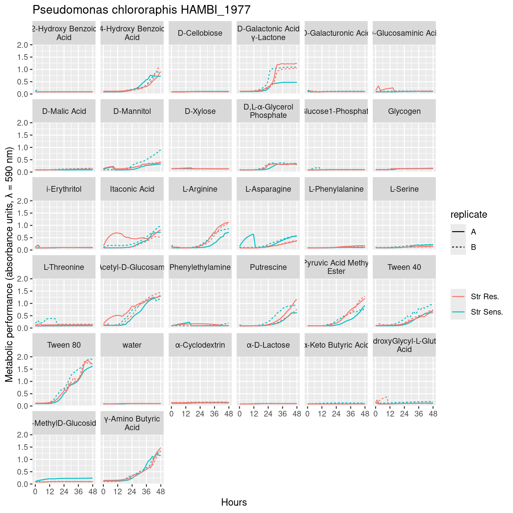

In the prior step we imported, smoothed, and calculated summary statistics for the species growth on Biolog Ecoplates. Here we will do some simple plots and analysis of the growth data on different carbon sources from the ecoplates.
1 Setup
Show/hide code
##### Librarieslibrary(tidyverse)library(here)library(fs)library(scales)library(errors)source(here::here("R", "utils_gcurves.R"))##### Global variablessdata_raw <- here::here("_data_raw", "biolog_ecoplates")data <- here::here("data", "biolog_ecoplates")# make processed data directory if it doesn't existfs::dir_create(data)
2 Introduction
The Biolog Ecoplates utilize tetrazolium reduction to measure the metabolic response of bacterial cells to different carbon substrates. Oxidized tetrazolium salt is water soluble, colorless in solution, and can freely diffuse into bacterial cells. Once inside the cell, tetrazolium is reduced by reducing agents like NADH an NADPH which are generated via cellular metabolism and catabolism. Once reduced tetrazolium is transformed into pink product. This assay measures the accumulation of reduced tetrazolium (colormetric absorbance at 590 nm) and hence the accumulation and concentration of reducing agents from cellular metabolism. This process will reflect both the concentration of cells in solution and per-capita concentration of reductant from central metabolism. There is a useful overview of the Tetrazolium colorometric procedure available here.
Figure 1: Full growth curves of Citrobacter koseri HAMBI_1287 on 31 different carbon substrates and water in Biolog Ecoplates over 48 hours of growth. Metabolic activity via tetrazolium reduction is colorometrically tracked with absorbance at 590 nm. Line type denotes the biological replicate, while line color denotes adaptation to the antibiotic streptomycin: Streptomycin resistant (red) Streptomycin sensitive (blue).

Figure 2: Growth of Pseudomonas chlororaphis HAMBI_1977 on 31 different carbon substrates and water in Biolog Ecoplates over 48 hours of growth. Metabolic activity via tetrazolium reduction is colorometrically tracked with absorbance at 590 nm. Line type denotes the biological replicate, while line color denotes adaptation to the antibiotic streptomycin: Streptomycin resistant (red) Streptomycin sensitive (blue).
5 Plot maximum absorbance
Show/hide code
# 1. for each replicate take the mean over all measurements within 0.05 units of the max# 2. subtract water from all values# 3. calculate mean and bootstrapped 95% CI across biological replicatesgcurves_metabolic_pref <- gcurves %>%mutate(strainID2 =paste0(toupper(evolution), "_", strain)) %>%filter(hours >24) %>%group_by(strainID2, `carbon source`, replicate) %>%filter(OD600 >=max(OD600)-0.05) %>%summarize(OD600 =mean(OD600)) %>%ungroup() %>%pivot_wider(names_from =`carbon source`, values_from ="OD600") %>%pivot_longer(cols =c(-strainID2, -replicate, -water), names_to ="carbon_source", values_to ="OD600") %>%mutate(OD600_norm =if_else((OD600 - water) <0, 0, OD600-water)) %>%summarize(ggplot2::mean_cl_boot(OD600), .by=c(strainID2, carbon_source)) %>%mutate(y_e = errors::set_errors(y, ymax-y)) %>%group_by(strainID2) %>%mutate(y_e_r = y_e/max(y_e)) %>%ungroup()# Order of carbon compounds from highest metabolic output to lowestcarbon_order_1287 <- gcurves_metabolic_pref %>%filter(strainID2 =="ANC_1287") %>%arrange(y_e_r) %>%pull(carbon_source)carbon_order_1977 <- gcurves_metabolic_pref %>%filter(strainID2 =="ANC_1977") %>%arrange(y_e_r) %>%pull(carbon_source)# plotp1287 <- gcurves_metabolic_pref %>%filter(str_detect(strainID2, "1287")) %>%mutate(hist =if_else(str_detect(strainID2, "ANC"), "Str Sens.", "Str Res.")) %>%mutate(carbon_source =factor(carbon_source, levels = carbon_order_1287)) %>%ggplot(aes(y = carbon_source, x = y_e, color = hist)) +geom_errors() +geom_point(size =3) +labs(y ="Carbon source ranked by metabolic output", x ="Metabolic performance (absorbance units, λ = 590 nm)",color ="", title ="Citrobacter koseri 1287")p1977 <- gcurves_metabolic_pref %>%filter(str_detect(strainID2, "1977")) %>%mutate(hist =if_else(str_detect(strainID2, "ANC"), "Str Sens.", "Str Res.")) %>%mutate(carbon_source =factor(carbon_source, levels = carbon_order_1977)) %>%ggplot(aes(y = carbon_source, x = y_e, color = hist)) +geom_errors() +geom_point(size =3) +labs(y ="Carbon source ranked by metabolic output", x ="Metabolic performance (absorbance units, λ = 590 nm)",color ="", title ="Pseudomonas chlororaphis 1977")
Figure 3: Mean maximum metabolic performance of Citrobacter koseri 1287 grown 31 carbon substrates over 48 hours. Horizontal axis depicts the maximum absorbance (AU, 590 nm) reached over 48 hours. Point represents the mean over three biological replicates while the line range depicts the 95% confidence interval. Carbon sources are displayed on the vertical axis and organized by decreasing maximum metabolic output of the ancestral, Streptomycin-sensitive strain. Point/line color depicts whether the strain is Streptomycin resistant/evolved (red) or Streptomycin sensitive/ancestral (blue).
Figure 4: Mean maximum metabolic performance of Pseudomonas chlororaphis 1977 grown 31 carbon substrates over 48 hours. Horizontal axis depicts the maximum absorbance (AU, 590 nm) reached over 48 hours. Point represents the mean over three biological replicates while the line range depicts the 95% confidence interval. Carbon sources are displayed on the vertical axis and organized by decreasing maximum metabolic output of the ancestral Streptomycin sensitive strain. Point/line color depicts whether the strain is Streptomycin resistant/evolved (red) or Streptomycin sensitive/ancestral (blue).
Source Code
---title: "Analyzing monoculture growth summary"author: "Shane Hogle"date: todaylink-citations: trueabstract: "In the prior step we imported, smoothed, and calculated summary statistics for the species growth on [Biolog Ecoplates](https://www.biolog.com/products/community-analysis-microplates/ecoplate/). Here we will do some simple plots and analysis of the growth data on different carbon sources from the ecoplates."---# Setup```{r}#| output: false#| warning: false#| error: false##### Librarieslibrary(tidyverse)library(here)library(fs)library(scales)library(errors)source(here::here("R", "utils_gcurves.R"))##### Global variablessdata_raw <- here::here("_data_raw", "biolog_ecoplates")data <- here::here("data", "biolog_ecoplates")# make processed data directory if it doesn't existfs::dir_create(data)```# IntroductionThe [Biolog Ecoplates](https://www.biolog.com/products/community-analysis-microplates/ecoplate/) utilize tetrazolium reduction to measure the metabolic response of bacterial cells to different carbon substrates. Oxidized tetrazolium salt is water soluble, colorless in solution, and can freely diffuse into bacterial cells. Once inside the cell, tetrazolium is reduced by reducing agents like NADH an NADPH which are generated via cellular metabolism and catabolism. Once reduced tetrazolium is transformed into pink product. This assay measures the accumulation of reduced tetrazolium (colormetric absorbance at 590 nm) and hence the accumulation and concentration of reducing agents from cellular metabolism. This process will reflect both the concentration of cells in solution and per-capita concentration of reductant from central metabolism. There is a useful overview of the Tetrazolium colorometric procedure [available here.](https://fi.promega.com/resources/pubhub/is-your-mtt-assay-really-the-best-choice/)# Read data```{r}#| output: false#| warning: false#| error: false##### Growth summary data (e.g., AUC and growth rates from )many_auc_res <- readr::read_tsv(here::here(data, "ecoplate_gcurve_auc_results.tsv"))many_spline_res <- readr::read_tsv(here::here(data, "ecoplate_gcurve_spline_results.tsv"))##### Full growth curvesgcurves <- readr::read_tsv(here::here(data, "ecoplate_gcurves_smooth.tsv")) %>%arrange(strainID, well, plate_name) %>%group_by(strainID, evolution, plate_name, `carbon source`, well) %>%mutate(id = dplyr::cur_group_id()) %>%group_by(strainID, evolution, `carbon source`) %>%mutate(replicate =case_when(id ==min(id) ~1, id ==max(id) ~n_distinct(id),TRUE~2)) %>%mutate(replicate = LETTERS[replicate]) %>% dplyr::select(-id) %>%ungroup() ```# Plot growth curves::: {#fig-01}```{r}#| fig.width: 8#| fig.height: 8#| echo: false#| warning: falsegcurves %>%mutate(hist =if_else(str_detect(evolution, "anc"), "Str Sens.", "Str Res.")) %>%filter(strainID =="HAMBI_1287") %>%ggplot() + ggplot2::geom_line(aes(x = hours, y = OD600_rollmean, color = hist, linetype = replicate, group =interaction(well, plate_name))) + ggplot2::labs(x ="Hours", y ="OD600") + ggplot2::scale_x_continuous(breaks =seq(0, 48, 12), labels =seq(0, 48, 12)) +labs(y ="Metabolic performance (absorbance units, λ = 590 nm)", x ="Hours", color ="",lintype ="Replicate",title ="Pseudomonas chlororaphis HAMBI_1977") +facet_wrap(~`carbon source`, labeller =labeller(`carbon source`=label_wrap_gen(20)))```Full growth curves of *Citrobacter koseri* HAMBI_1287 on 31 different carbon substrates and water in Biolog Ecoplates over 48 hours of growth. Metabolic activity via tetrazolium reduction is colorometrically tracked with absorbance at 590 nm. Line type denotes the biological replicate, while line color denotes adaptation to the antibiotic streptomycin: Streptomycin resistant (red) Streptomycin sensitive (blue).:::::: {#fig-02}```{r}#| fig.width: 8#| fig.height: 8#| echo: false#| warning: falsegcurves %>%mutate(hist =if_else(str_detect(evolution, "anc"), "Str Sens.", "Str Res.")) %>%filter(strainID =="HAMBI_1977") %>%ggplot() + ggplot2::geom_line(aes(x = hours, y = OD600_rollmean, color = hist, linetype = replicate, group =interaction(well, plate_name))) + ggplot2::labs(x ="Hours", y ="OD600") + ggplot2::scale_x_continuous(breaks =seq(0, 48, 12), labels =seq(0, 48, 12)) +facet_wrap(~`carbon source`)+labs(y ="Metabolic performance (absorbance units, λ = 590 nm)", x ="Hours", color ="",lintype ="Replicate",title ="Pseudomonas chlororaphis HAMBI_1977") +facet_wrap(~`carbon source`, labeller =labeller(`carbon source`=label_wrap_gen(20)))```Growth of *Pseudomonas chlororaphis* HAMBI_1977 on 31 different carbon substrates and water in Biolog Ecoplates over 48 hours of growth. Metabolic activity via tetrazolium reduction is colorometrically tracked with absorbance at 590 nm. Line type denotes the biological replicate, while line color denotes adaptation to the antibiotic streptomycin: Streptomycin resistant (red) Streptomycin sensitive (blue).:::# Plot maximum absorbance```{r}#| output: false#| warning: false# 1. for each replicate take the mean over all measurements within 0.05 units of the max# 2. subtract water from all values# 3. calculate mean and bootstrapped 95% CI across biological replicatesgcurves_metabolic_pref <- gcurves %>%mutate(strainID2 =paste0(toupper(evolution), "_", strain)) %>%filter(hours >24) %>%group_by(strainID2, `carbon source`, replicate) %>%filter(OD600 >=max(OD600)-0.05) %>%summarize(OD600 =mean(OD600)) %>%ungroup() %>%pivot_wider(names_from =`carbon source`, values_from ="OD600") %>%pivot_longer(cols =c(-strainID2, -replicate, -water), names_to ="carbon_source", values_to ="OD600") %>%mutate(OD600_norm =if_else((OD600 - water) <0, 0, OD600-water)) %>%summarize(ggplot2::mean_cl_boot(OD600), .by=c(strainID2, carbon_source)) %>%mutate(y_e = errors::set_errors(y, ymax-y)) %>%group_by(strainID2) %>%mutate(y_e_r = y_e/max(y_e)) %>%ungroup()# Order of carbon compounds from highest metabolic output to lowestcarbon_order_1287 <- gcurves_metabolic_pref %>%filter(strainID2 =="ANC_1287") %>%arrange(y_e_r) %>%pull(carbon_source)carbon_order_1977 <- gcurves_metabolic_pref %>%filter(strainID2 =="ANC_1977") %>%arrange(y_e_r) %>%pull(carbon_source)# plotp1287 <- gcurves_metabolic_pref %>%filter(str_detect(strainID2, "1287")) %>%mutate(hist =if_else(str_detect(strainID2, "ANC"), "Str Sens.", "Str Res.")) %>%mutate(carbon_source =factor(carbon_source, levels = carbon_order_1287)) %>%ggplot(aes(y = carbon_source, x = y_e, color = hist)) +geom_errors() +geom_point(size =3) +labs(y ="Carbon source ranked by metabolic output", x ="Metabolic performance (absorbance units, λ = 590 nm)",color ="", title ="Citrobacter koseri 1287")p1977 <- gcurves_metabolic_pref %>%filter(str_detect(strainID2, "1977")) %>%mutate(hist =if_else(str_detect(strainID2, "ANC"), "Str Sens.", "Str Res.")) %>%mutate(carbon_source =factor(carbon_source, levels = carbon_order_1977)) %>%ggplot(aes(y = carbon_source, x = y_e, color = hist)) +geom_errors() +geom_point(size =3) +labs(y ="Carbon source ranked by metabolic output", x ="Metabolic performance (absorbance units, λ = 590 nm)",color ="", title ="Pseudomonas chlororaphis 1977")```::: {#fig-03}```{r}#| fig.width: 8#| fig.height: 6#| echo: false#| warning: falsep1287```Mean maximum metabolic performance of *Citrobacter koseri* 1287 grown 31 carbon substrates over 48 hours. Horizontal axis depicts the maximum absorbance (AU, 590 nm) reached over 48 hours. Point represents the mean over three biological replicates while the line range depicts the 95% confidence interval. Carbon sources are displayed on the vertical axis and organized by decreasing maximum metabolic output of the ancestral, Streptomycin-sensitive strain. Point/line color depicts whether the strain is Streptomycin resistant/evolved (red) or Streptomycin sensitive/ancestral (blue).:::::: {#fig-04}```{r}#| fig.width: 8#| fig.height: 6#| echo: false#| warning: falsep1977```Mean maximum metabolic performance of *Pseudomonas chlororaphis* 1977 grown 31 carbon substrates over 48 hours. Horizontal axis depicts the maximum absorbance (AU, 590 nm) reached over 48 hours. Point represents the mean over three biological replicates while the line range depicts the 95% confidence interval. Carbon sources are displayed on the vertical axis and organized by decreasing maximum metabolic output of the ancestral Streptomycin sensitive strain. Point/line color depicts whether the strain is Streptomycin resistant/evolved (red) or Streptomycin sensitive/ancestral (blue).:::````{comment}# Plot maximum observed absorbanceSome clustering to plot by more similar responses```{r}df2clust <- many_auc_res %>% mutate(strainID2 = paste0(toupper(evolution), "_", strain)) %>% summarize(y = min(max_od), .by=c(strainID2, `carbon source`)) %>% pivot_wider(names_from = "carbon source", values_from = "y") %>% pivot_longer(c(-strainID2, -water)) %>% mutate(value_norm = value - water) %>% pivot_wider(id_cols = c(-water, -value), names_from = "strainID2", values_from = "value_norm") %>% as.data.frame() %>% column_to_rownames(var = "name")# scale the dataframe for clusteringdf2clust_scaled <- scale(df2clust)# perform the hierarchcical clustering using euclidean distance and Ward's Dhc <- hclust(dist(df2clust_scaled, method = "euclidean"), method = "ward.D2" )# plotdf2clust %>% rownames_to_column(var = "carbon") %>% pivot_longer(cols = -carbon) %>% mutate(carbon = factor(carbon, levels = hc$labels[hc$order]), name = factor(name, levels = c("ANC_1287", "EVO_1287", "ANC_1977", "EVO_1977"))) #%>% ggplot(aes(x = name, y = carbon)) + geom_tile(aes(fill = value)) + scale_x_discrete(guide = guide_axis(angle = 90)) + scale_fill_viridis_c() + scale_color_manual(values = c("white", "black"), guide = "none") + labs(y = "Carbon substrate", fill = "Maximum\nabsorbance", x = "") + coord_fixed() + ggplot2::theme(panel.grid = element_blank(), panel.background = element_blank(), strip.background = element_blank(), panel.border = element_blank())```::: {#fig-03}```{r}#| fig.width: 8#| fig.height: 8#| echo: false#| warning: falsemany_auc_res %>% mutate(strainID2 = paste0(toupper(evolution), "_", strain)) %>% summarize(y = min(max_od), .by=c(strainID2, `carbon source`)) %>% #summarize(ggplot2::mean_cl_boot(max_od), .by=c(strainID2, `carbon source`)) %>% mutate(strainID2 = factor(strainID2, levels = c("ANC_1287", "EVO_1287", "ANC_1977", "EVO_1977"))) %>% ggplot(aes(x = strainID2, y = `carbon source`)) + geom_tile(aes(fill = y)) + scale_x_discrete(guide = guide_axis(angle = 90)) + scale_fill_viridis_c() + scale_color_manual(values = c("white", "black"), guide = "none") + labs(y = "Carbon substrate", fill = "Maximum\nabsorbance", x = "") + coord_fixed() + ggplot2::theme(panel.grid = element_blank(), panel.background = element_blank(), strip.background = element_blank(), panel.border = element_blank())```Mean maximum absorbance (590 nm, fill) over 2 replicates for the 4 strains (x-axis) grown on 31 carbon substrates and water (y-axis). :::# Plot AUC::: {#fig-04}```{r}#| fig.width: 8#| fig.height: 8#| echo: false#| warning: falsemany_auc_res %>% mutate(strainID2 = paste0(toupper(evolution), "_", strain)) %>% summarize(ggplot2::mean_cl_boot(auc), .by=c(strainID2, `carbon source`)) %>% mutate(strainID2 = factor(strainID2, levels = c("ANC_1287", "EVO_1287", "ANC_1977", "EVO_1977"))) %>% ggplot(aes(x = strainID2, y = `carbon source`)) + geom_tile(aes(fill = y)) + scale_x_discrete(guide = guide_axis(angle = 90)) + scale_fill_viridis_c() + scale_color_manual(values = c("white", "black"), guide = "none") + labs(y = "Carbon substrate", fill = "Area under the\ngrowth curve", x = "") + coord_fixed() + ggplot2::theme(panel.grid = element_blank(), panel.background = element_blank(), strip.background = element_blank(), panel.border = element_blank())```As in @fig-03 but for total area under the growth curve.:::# Plot growth rate::: {#fig-04}```{r}#| fig.width: 8#| fig.height: 8#| echo: false#| warning: falsemany_spline_res %>% mutate(strainID2 = paste0(toupper(evolution), "_", strain)) %>% summarize(ggplot2::mean_cl_boot(mumax), .by=c(strainID2, `carbon source`)) %>% mutate(strainID2 = factor(strainID2, levels = c("ANC_1287", "EVO_1287", "ANC_1977", "EVO_1977"))) %>% ggplot(aes(x = strainID2, y = `carbon source`)) + geom_tile(aes(fill = y)) + scale_x_discrete(guide = guide_axis(angle = 90)) + scale_fill_viridis_c() + scale_color_manual(values = c("white", "black"), guide = "none") + labs(y = "Carbon substrate", fill = "Growth rate\n(hr-1)", x = "") + coord_fixed() + ggplot2::theme(panel.grid = element_blank(), panel.background = element_blank(), strip.background = element_blank(), panel.border = element_blank())```As in @fig-03 but for growth rate (hr-1):::# Save```{r}#| eval: falseggsave( here::here("figs", "monoculture_auc_filtrate.svg"), auc_filtrate, width = 8, height = 8, units = "in", device = "svg")```````